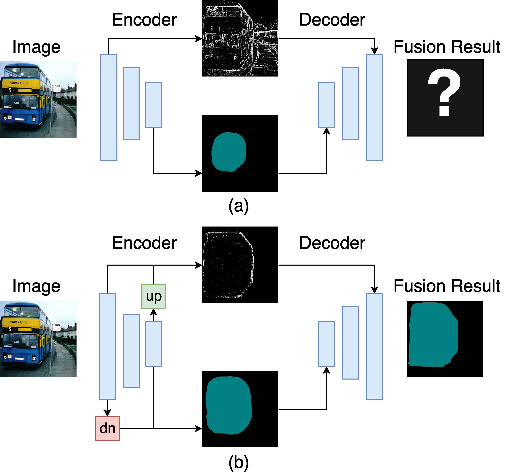

Senior Undergrad in Computer Science
Fudan University
|  |
ExFuse: Enhancing Feature Fusion for Semantic Segmentation Modern semantic segmentation frameworks usually combine low-level and high-level features from pre-trained backbone convolutional models to boost performance. In this paper, we first point out that a simple fusion of low-level and high-level features could be less effective because of the gap in semantic levels and spatial resolution. We find that introducing semantic information into low-level features and high-resolution details into high-level features is more effective for the later fusion. Based on this observation, we propose a new framework, named ExFuse, to bridge the gap between low-level and high-level features thus significantly improve the segmentation quality by 4.0% in total. Furthermore, we evaluate our approach on the challenging PASCAL VOC 2012 segmentation benchmark and achieve 87.9% mean IoU, which outperforms the previous state-of-the-art results.
|